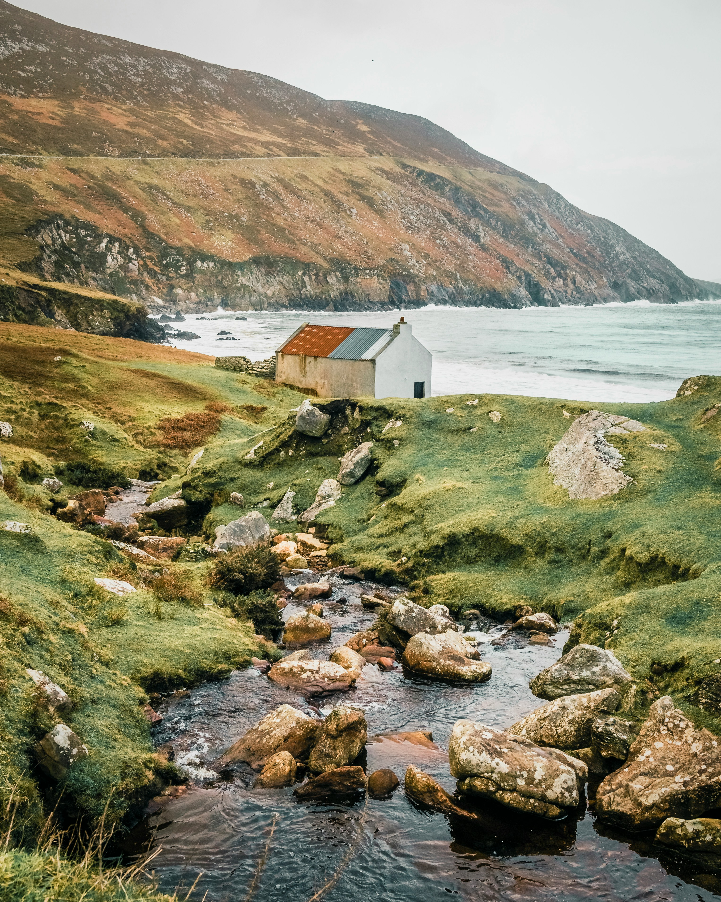

// game development
Games
Indie games I've made in my spare time, mostly in Godot 4 with a bit of Unity. So far some small projects to help build my knowledge base before moving onto more ambitious projects. Currently have 3 "finished" projects on itch.io with 2 more larger projects in active development. The idea is to learn something new with these projects and so they are all built without genAI.
Simple Checkers
A 2-player game of checkers built in PyGame.
Rocket Boost
Simple, short obstacle game. Try and navigate your rocket through the cave without crashing.
Cave Delver
Make your way through this cavern, fighting off enemies and trying to find the exit!
Coastal walking simulator
A short 3D walking simulator set in in a coastal cottage inspired by Irish coastal country side. The game is being built in Godot and will focus on atmosphere and environment centered around a compelling narrative driven story.
